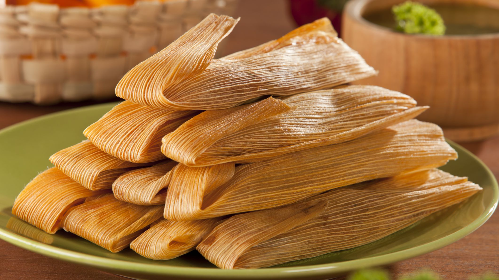

Tamales
Filling
- 1/2 pound pork shoulder
- 1/2 onion
- 4 cloves garlic
- 2 bay leaves
- salt
- water
- corn husks
Sauce
1 pound roma tomatoes
- 4 dried chile de arbol peppers
- 4 guajillo chile peppers
- 1 tablespoon cornstarch
Tamales
- 1 1/4 cups lard
- 4 1/2 cups fresh corn masa dough
- 1 tablespoon salt
- 1 tablespoon baking powder